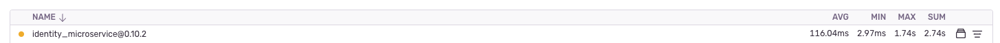

Our cache library
Agenda
- Our goal
- Explanation
- Use case
- Some links
- Open for questions
Our goal
Share information about the cache library (evio-redis-connection for now and will be renamed to evio-library-redis) we created and how we have used it.
Explanation
As many colleagues already know, we have implemented some libraries to reuse code and find solutions to some problems on our platform and the caching topic would be no exception.
Features
All features and dependencies are described in the library's README but some we can address:
- It allows us to cache data in a simple way
- Timeout for operations by default
- It is a library that abstracts the use of Redis via ioredis using sentinels approach
- Named connections
Use case
In the "Identity" service, we have an endpoint where the original logic was very complex (multiple HTTP requests for different services and queries without indexing) and heavily used (especially by the webclient) and had a significant impact on the entire platform because we know that our Identity service is a central piece in the current architecture,
reaching situations where we had more than 30s of response time in the worst cases and in common situations something around 5s.
How we solved it?
- Code optimizations
- Add useful indexes
- Implement cache (including properly invalidation)

A few reminders
- Cache is not a silver bullet
- Cache invalidation is a hard problem
- Cache is a trade-off
- Keep your eyes on cache usage(cache hits vs misses)

Some links
Some links that can help with some doubts and related topics: